外科腫瘤學原則
Surgical Oncology Principles｜講者：府城宏醫師
2026 年 11 月 26 日｜聯盟獸醫教育中心 卓越講堂
投影片依上課時貼上的截圖整理（部分投影片截圖未存檔，以文字呈現）；全場錄音（Plaud 逐字稿，含 Q&A）。語音辨識有聽錯處，已依投影片與上下文更正，不確定處以 ❔ 標示。
⭐ 本場重點
- 病史四件事：時間、位置、診斷／已做的檢查、已做的治療
- 理學檢查一定要做直腸觸診，並檢查局部淋巴結
- 腫塊描述：解剖位置、方向、大小、質地、是否可自由移動、疼痛與溫度、表面病灶
- 轉移途徑：血行、淋巴、直接播種
- 大原則：癌（carcinoma）與圓形細胞瘤 → 淋巴；肉瘤（sarcoma）→ 血行
- 不是每個腫瘤細胞都能完成轉移的整個過程
- 分期／共病基本檢查：CBC、生化、尿檢、胸腔 X 光、腹部超音波、採樣；進階：CT／MRI、顯影檢查、其他專科會診
- 切片要切得相對深，太淺可能拿不到完整資訊
- 單一切片常低估 STS 分級（一致率約 59–71%）：取 ≥2 個（中央＋周邊），切片低分級只當最低值
- 治療目標要和飼主共識：根治、緩和減積、輔助、前導；多種治療合併，一定要追蹤
- 手術劑量：切開／囊內 → 邊緣 → 廣泛 → 根治；切片疤要一起切掉
- 報告「乾淨」不等於安全：固定前上墨、標方向、釘平（不釘會縮 ~18%）；STS 三年復發 7%／乾淨但很近 23%／浸潤 42%
- 皮膚 MCT 用比例切緣：側緣＝腫瘤最寬直徑＋深部一層筋膜；組織學切緣 <2 mm 與 c-kit exon 11 突變預測復發
- MCT 不一定要開刀：tigilanol tiglate 瘤內注射單次 1 個月完全緩解 75%，但一定會有傷口，也不能取代淋巴結分期
- 淋巴結大小不能預測轉移；要找出並摘除哨兵淋巴結（ICG、藍染、淋巴閃爍攝影），SLN 有 57% 不是解剖上的局部淋巴結
- 🎤 “The best chance to remove a tumor is the first time.” 必要時寧可傷口開放，也不要為了關傷口犧牲切緣
- 🎤 FNA 先做、胸腔 X 光不妥協；FNA 不是 100%，脂肪瘤也不要講死；只要切腫瘤就一定送病理
- 🎤 切開皮膚後兩側會回縮，切緣線在 gap 正中間垂直往下切，找到筋膜後綁在皮膚上，避免深部切緣內縮
- 🎤 切不乾淨：STS grade 1 可每 6 個月監測（摸疤＋胸腔 X 光），grade 2–3 考慮放療或把整條疤當腫瘤重切
- 術中：每顆腫瘤分開器械，切完換器械手套再關；單股縫線；大多不放引流管（可能播種）
- 決定劑量：腫瘤種類、分期、大小、位置、飼主目標、預後、整體健康、手術目的
- 深部切緣看筋膜平面：Vet Surg 2022 Fascial plane mapping Part I–III（頸軀幹／前肢／後肢骨盆）
場次資訊
▾- 主題：Surgical oncology principles 外科腫瘤學原則。
- 講者：府城宏醫師。
- 形式：聯盟獸醫教育中心 卓越講堂（2026-11-26，線上）。
🎤 講者口述
- 🎤 講者最喜歡的一句話：“The best chance to remove a tumor is the first time.”（切除腫瘤最好的機會是第一次）。要做到並不容易，沒有完整知識背景、或和飼主溝通不完整時，後續衍生問題會很多。
- 🎤 對象：剛開始對腫瘤外科有興趣、或已經在做腫瘤切除的醫師，用實證的方式釐清觀念。
- 🎤 大綱：術前評估 → 手術規劃 → 淋巴結 → 術中考量與決策；原本準備的病例討論因時間不夠沒有講。
- 🎤 錄音：Plaud 分享連結（講者2＝府城宏醫師，講者4＝主持人；錄音中講者名字被辨識成「輔成／福成／傅成」）。
1. 病史：該問哪些問題？
▾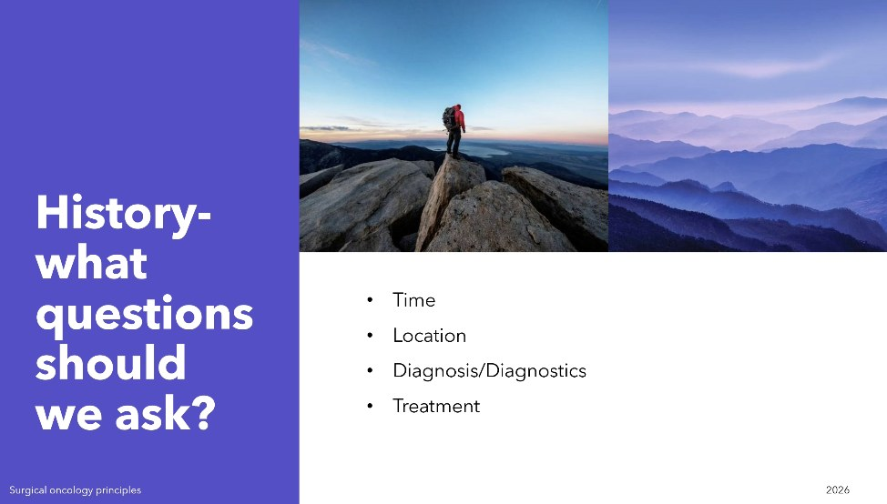
📷 腫瘤病患的病史要問四件事：
| 投影片 | 💡 實際要問的內容 |
|---|---|
| Time 時間 | 什麼時候發現的？長大的速度（幾天 vs 幾個月）？大小有沒有忽大忽小？ |
| Location 位置 | 長在哪裡？有沒有其他位置也有腫塊？ |
| Diagnosis／Diagnostics 診斷與已做檢查 | 之前做過細針抽吸（FNA）或切片嗎？結果是什麼？做過影像嗎？ |
| Treatment 治療 | 之前處理過嗎（手術、類固醇、抗生素、化療）？反應如何？是否為復發？ |
🎤 講者口述
- 🎤 Signalment 很基本但很重要：品種有好發腫瘤，可以幫忙 rule in（不能 rule out），例如 retriever、羅威那犬較常見骨肉瘤、組織細胞肉瘤；未絕育母犬要想到乳腺、卵巢腫瘤；未去勢公犬的肛周腺（hepatoid gland）腫瘤與雄性素有關，大多是良性。
- 🎤 時間：大腫瘤存在三年 vs 三週差別很大。短時間變很大，要想比較 aggressive，或根本不是腫瘤：例如公犬會陰部腫脹，要先想會陰疝氣（膀胱或腸子卡在裡面）→ 先放超音波探頭看，而不是去戳它，避免破裂或污染。
- 🎤 位置：會陰、鼠蹊、臍部、肋骨旁（尤其有外傷史）先想疝氣；脖子周邊先想甲狀腺。
- 🎤 診斷：來之前是否已有 FNA、切片、影像、報告？台灣飼主常不想重做。結果在一個月內、腫塊沒什麼變化通常可用；如果是一年前的結果、腫塊又變大，建議重做。
- 🎤 治療：之前開過刀要回頭看病理報告（影響下一步，尤其是要做修復重建時）；是否做過放射、長期類固醇、瘤內消融或注射——這些可能增加術後併發症。
- 🎤 這四點是講者「永遠記著」的快速病史大綱，再另外問心臟病等相關病史。
2. 理學檢查
▾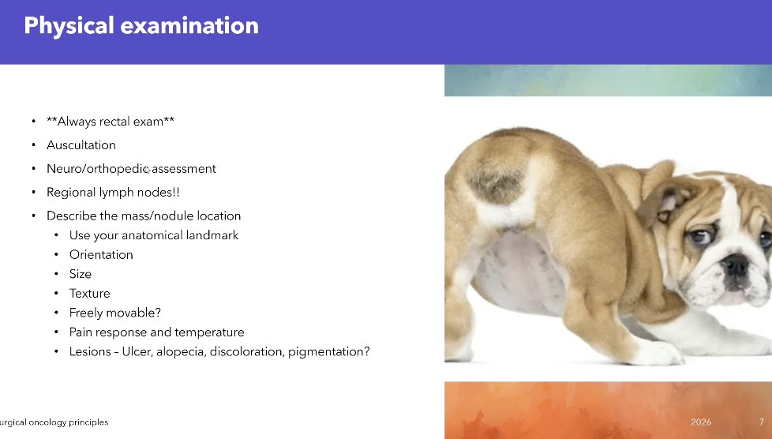
- 📷 一定要做直腸觸診（投影片上特別用 ** 強調）。
- 📷 聽診。
- 📷 神經學與骨科評估。
- 📷 局部淋巴結！！
- 📷 描述腫塊／結節：
- 用解剖標記描述位置
- 方向（orientation）
- 大小
- 質地
- 是否可自由移動？
- 疼痛反應與溫度
- 表面病灶：潰瘍、脫毛、變色、色素沉著？
描述腫塊：大小用游標卡尺量三個軸向、拍照並畫在體表圖上，方便手術規劃與追蹤；「固定於深層組織」代表可能侵犯筋膜或肌肉，會影響手術範圍。
神經與骨科評估：可以抓到骨腫瘤造成的跛行、脊椎或神經根腫瘤造成的疼痛與缺損，也是術後功能預期的基準線。
🎤 講者口述
- 🎤 養成做全身理學檢查的習慣，不要只針對主訴。
- 🎤 直腸觸診是講者唯一不讓步的檢查：常常是來看骨科問題，直腸一摸摸到大腫瘤，整個計畫就改變。學校的玩笑：唯一不做直腸觸診的情況是你沒有手指，或動物沒有肛門。
- 🎤 直腸觸診講者會看：伸到最深摸腰下淋巴結；往上摸腰薦接合處有沒有疼痛（後肢痛可能是那裡有骨溶解）；直腸有沒有腫塊；肛周、肛門囊有沒有腫瘤。
- 🎤 神經與骨科評估：例如懷疑骨肉瘤、跛很久的狗，要先確認其他肢與神經沒有大問題才截肢，不然截完可能站不起來、預後不好。
- 🎤 淋巴結觸診：容易摸到的有下顎、淺頸（肩前）、鼠蹊、膕；腋下只有大狗不一定摸得到，貓與小狗通常摸不到，除非明顯腫大。平常就摸正常病患累積經驗，物種也有差異。
- 🎤 也會看嘴巴，排除口腔腫瘤。
- 🎤 腫塊描述寫清楚，轉診時對方就能大致猜出腫瘤的樣子與質地。
3. 局部行為與轉移模式
▾
- 📷 轉移途徑：血行（hematogenous）、淋巴（lymphatic）、直接播種（direct seeding）。
- 📷 一般而言：
- 癌（carcinoma）與圓形細胞瘤 → 淋巴
- 肉瘤（sarcoma）→ 血行
- 📷 轉移的過程：
- 從原發腫瘤脫離
- 穿過正常組織移動
- 侵入微血管（intravasation）
- 在循環中存活
- 附著到遠處的血管內皮細胞
- 穿出血管（extravasation）
- 血管新生（angiogenesis）
- 增生
- 📷 不是所有細胞都能撐完這趟旅程。
直接播種的臨床意義：移行上皮癌（TCC/UC）可能沿 FNA 針道或手術切口播種；手術時要換器械與手套，避免把腫瘤細胞帶到乾淨的組織。
🎤 講者口述
- 🎤 癌與圓形細胞瘤走淋巴、肉瘤走血行，會影響怎麼分期；轉移步驟的細節講者因時間略過。
4. 分期與共病評估
▾
📷 必要的基本檢查：
| 檢查 | 💡 目的 |
|---|---|
| 全血球計數（CBC） | 貧血、血小板減少、白血球異常；麻醉風險與副腫瘤症候群 |
| 生化 | 腎肝功能（麻醉與藥物代謝）、高血鈣（淋巴瘤、肛門囊腺癌）、低血糖（胰島素瘤、肝腫瘤） |
| 尿液檢查 | 腎功能、泌尿道感染；泌尿道腫瘤的線索 |
| 胸腔 X 光 | 肺轉移；建議三個角度（左右側躺＋腹背位） |
| 腹部超音波 | 腹腔轉移、腹內淋巴結、共病 |
| 採樣 | 原發腫瘤（FNA／切片）與局部淋巴結細胞學 |
📷 進階檢查（同一張投影片後半，截圖未存檔，僅文字）：
| 檢查 | 💡 目的 |
|---|---|
| CT／MRI | 手術規劃（腫瘤範圍、與血管神經的關係）、偵測小的肺轉移；MRI 用於神經系統與軟組織 |
| 顯影檢查（contrast study） | 例如消化道、泌尿道顯影，評估管腔內腫塊與阻塞 |
| 其他專科會診與檢查 | 例如心臟（術前心臟超音波）、眼科、神經科 |
🎤 講者口述
- 🎤 第一步是 FNA，最簡單，可以省下很多錢與冤枉路；一線醫院不能一開始就叫飼主做 CT。
- 🎤 基本檢查：CBC、生化，尿檢 ±；胸腔 X 光講者不妥協，任何腫瘤都要拍（除非飼主很明確只想先 FNA）。
- 🎤 FNA 不是 100%：10 公分的腫塊不可能每個角落都抽到；大部分是脂肪的腫塊，中心可能藏著真正的腫瘤。所以 FNA 是脂肪瘤也不要跟飼主講死，先說明細胞學與組織病理不一定一致，結果不同時才不會產生糾紛。
- 🎤 FNA 結果能幫助規劃：肥大細胞瘤、肉瘤相對好規劃；出血性腫瘤、注射部位腫瘤較 tricky。
- 🎤 顯影檢查看目的：找轉移，或把腫瘤本身凸顯出來；常合併在 CT／MRI 中。細節可以另開一堂課。
5. 切片（Biopsy）
▾
- ✍️ 切片需要切得相對深，如果不夠深，可能沒辦法得到完整的資訊。
為什麼要夠深：腫瘤表面常是潰瘍、壞死或發炎反應，太淺只會拿到這些組織，看不到腫瘤本體，也無法判斷侵犯深度。
切片原則：切口方向與位置要能在之後的根治手術整個切除（切片路徑視為被污染）；避免切開正常組織平面、避免只取壞死中心；病灶與正常組織交界處通常資訊最多。
一次切片可能低估腫瘤分級
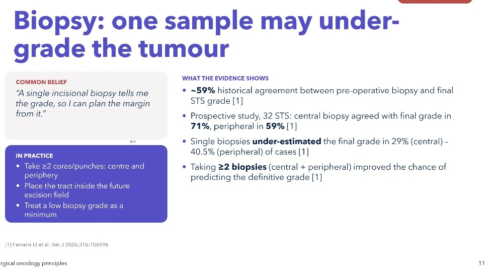
常見迷思
「做一次切開切片（incisional biopsy）就知道分級，可以直接用它來規劃切緣。」
實務上怎麼做
- 取 ≥2 個針芯／punch：中央＋周邊各一
- 切片路徑要放在之後切除的範圍內
- 切片的低分級只能當作「最低分級」看待
📷 證據（軟組織肉瘤 STS；Ferraris EI et al. Vet J 2026;316:106596）：
- 過去術前切片與最終 STS 分級的一致率約 59%。
- 前瞻性研究 32 例 STS：中央切片與最終分級一致 71%，周邊切片 59%。
- 單一切片低估最終分級：中央 29%、周邊 40.5%。
- 取 ≥2 個切片（中央＋周邊）能提高預測最終分級的機會。
🎤 講者口述
- 🎤 重點是時機：切片結果會改變後續決策時才切。
- 🎤 例子：中型黑狗胸側有腫塊、和肋骨黏在一起，X 光看起來從肋骨長出、沒有胸腔轉移。三大鑑別：軟骨肉瘤、骨肉瘤、血管肉瘤。軟骨肉瘤預後較好，飼主可能願意接受胸壁切除＋重建；骨肉瘤預後差，飼主選緩和照護也很合理——這種情況講者一定先切片。
- 🎤 例子：貓的注射部位肉瘤，建議切緣可到 5 公分、深部兩層筋膜，很多位置做不到。要提議截肢或拿掉半邊胸壁之前，要有證據支持；若只是低分級腫瘤，這麼大的手術就不必要，還會影響功能與生活品質。
- 🎤 投影片右上的 punch 切片比較偏皮膚科評估（會包含正常皮膚）；腫瘤要的是腫瘤的核心，所以要切得相對深。
- 🎤 既然都進去了，可以拿 2、3、4 個樣本，在不傷害動物的前提下越多越好。
- 🎤 切片位置要事先想好：位置尷尬會讓之後的切緣變很大、也影響傷口閉合。
6. 每種治療選項的目標
▾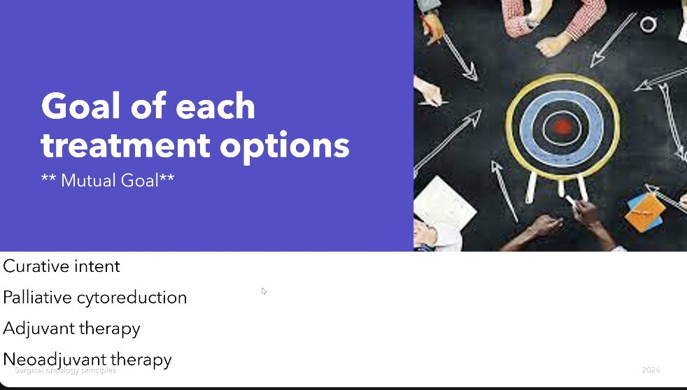
📷 治療目標要和飼主取得共識（mutual goal）：
| 投影片 | 💡 意思 |
|---|---|
| Curative intent 根治 | 以手術（±其他治療）把腫瘤完全清除為目標 |
| Palliative cytoreduction 緩和性減積 | 無法根治，切除大部分腫瘤以改善生活品質（如潰瘍、出血、阻塞、疼痛） |
| Adjuvant therapy 輔助治療 | 手術後的化療、放療等，處理殘留病灶或微轉移 |
| Neoadjuvant therapy 前導治療 | 手術前先用化療、放療等縮小腫瘤，讓手術可行或範圍變小 |
- ✍️ 很多腫瘤會合併多種治療：手術、化療、電化療等等。
- ✍️ 重點是要追蹤（follow up）。
🎤 講者口述
- 🎤 不要只想到手術：多數腫瘤有手術、化療、放療三種支柱，現在還有基因治療、電化療、瘤內藥物、消融等；很多腫瘤要合併使用。
- 🎤 最重要是追蹤：不要切完飼主就拜拜；不是自己專長就轉給腫瘤專科長期追蹤。常見的是沒追蹤，一年後回來已經轉移到胸腔；早點發現局部復發或局部淋巴結，還有機會做局部控制、減少全身擴散。
- 🎤 Mutual：不是獸醫說了算。一個腫瘤可能有好幾個選項，把每個選項的優缺點呈現給飼主，自己心裡可以有排序，但最後讓飼主選，避免日後「是你逼我截肢的」這類誤會。
- 🎤 記錄下來：和飼主討論過哪些選項都要寫進病歷，下一位醫師才知道，飼主日後說沒提供時也有紀錄。
- 🎤 回到 Halsted 外科原則：尊重組織。因為最好的機會是第一次，必要時寧可讓傷口開放，也不要為了關傷口犧牲切緣（要先和飼主討論）。
7. 手術規劃：手術劑量與切緣
▾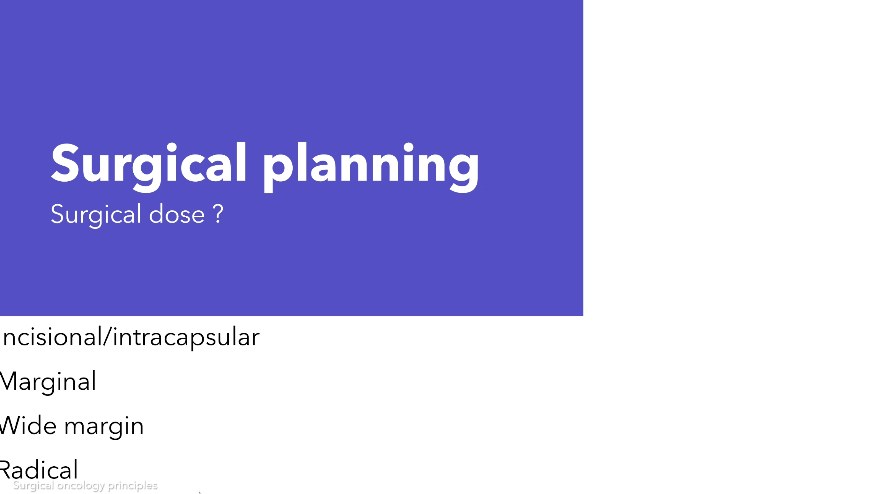
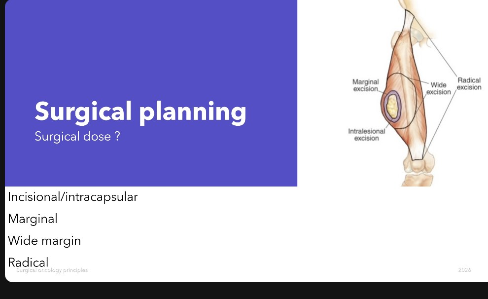

📷 「手術劑量」（surgical dose）分四級：
| 投影片 | 💡 切在哪裡 | 💡 結果與用途 |
|---|---|---|
| Incisional／intracapsular（intralesional） | 切進腫瘤內 | 一定留下肉眼可見的腫瘤（dirty）；用於切片或減積 |
| Marginal 邊緣切除 | 沿著腫瘤的（偽）包膜／反應區切 | 常留下顯微殘留（narrow）；適合良性腫瘤（如脂肪瘤） |
| Wide margin 廣泛切除 | 腫瘤外加一圈正常組織（側緣常說 2–3 cm＋一層深部筋膜） | 目標是完整切除（wide／complete）；多數惡性軟組織腫瘤 |
| Radical 根治性切除 | 切除整個解剖區塊或整個器官／肌肉群 | 例如截肢、整塊肌肉切除；✍️ 課堂例子：脾臟摘除 |
- ✍️ 規劃切除範圍時要把切片的疤（biopsy scar）考慮進去——切片路徑要一起切掉。
- ✍️ CT 可以確認脂肪瘤。
怎麼決定手術劑量

📷 決定手術劑量要考慮：腫瘤種類、分期、大小、位置、飼主的目標、預後、病患整體健康、手術目的 → 手術劑量。
深部切緣：筋膜平面地圖
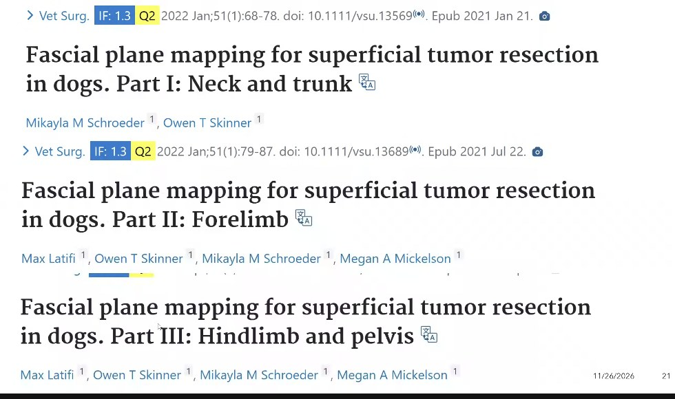
📷 講者介紹的系列文獻（Vet Surg 2022;51(1)）：
- Part I：頸部與軀幹（Schroeder & Skinner；68–78，doi:10.1111/vsu.13569）
- Part II：前肢（Latifi, Skinner, Schroeder, Mickelson；79–87，doi:10.1111/vsu.13689）
- Part III：後肢與骨盆（Latifi, Skinner, Schroeder, Mickelson）
病理報告寫「乾淨」不代表全部
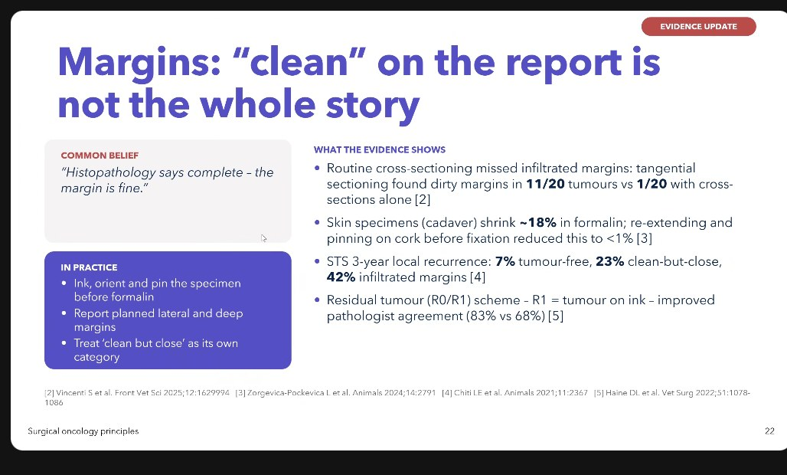
常見迷思
「病理報告說切除完整，切緣就沒問題。」
實務上怎麼做
- 放進福馬林之前先上墨、標方向、把檢體釘平
- 送檢時寫上預計的側緣與深部切緣
- 把「乾淨但很近」（clean but close）當成獨立一類看待
📷 證據：
- 常規的橫切（cross-section）會漏掉被浸潤的切緣：切線（tangential）切片在 11/20 個腫瘤找到髒切緣，只做橫切的只有 1/20（Vincenti 2025, Front Vet Sci 12:1629994）。
- 皮膚檢體（屍體）在福馬林中會縮 ~18%；固定前先拉回原尺寸、釘在軟木板上，收縮可降到 <1%（Zorgevica-Pockevica 2024, Animals 14:2791）。
- STS 三年局部復發率：無腫瘤切緣 7%、乾淨但很近 23%、浸潤切緣 42%（Chiti 2021, Animals 11:2367）。
- 殘留腫瘤（R0／R1）分類，R1＝腫瘤碰到墨水：病理師之間一致性提高（83% vs 68%）（Haine 2022, Vet Surg 51:1078–1086）。
肥大細胞瘤：比例切緣
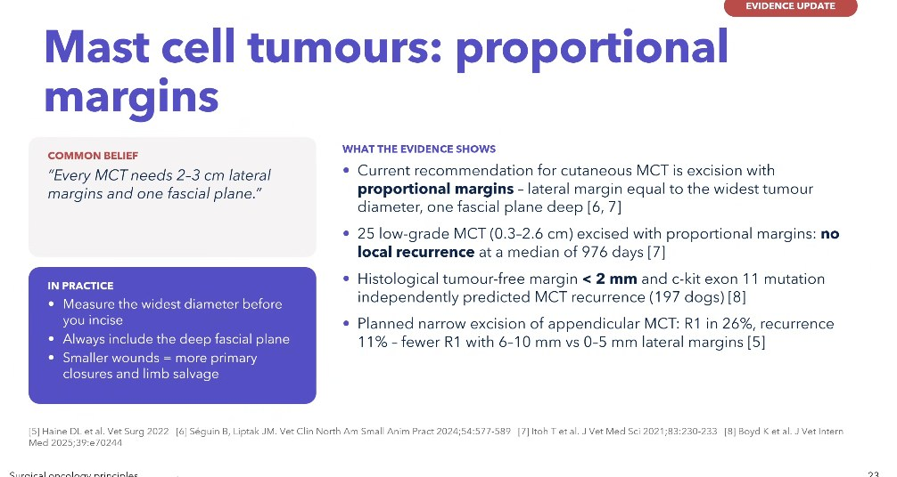
常見迷思
「每個 MCT 都要 2–3 cm 側緣加一層筋膜。」
實務上怎麼做
- 下刀前先量腫瘤最寬的直徑
- 一定要包含深部筋膜層
- 傷口較小 → 更多能直接縫合、更多保肢
📷 證據：
- 目前皮膚 MCT 的建議是比例切緣（proportional margins）：側緣＝腫瘤最寬直徑，深部一層筋膜（Séguin & Liptak, VCNA 2024;54:577–589；Itoh 2021, J Vet Med Sci 83:230–233）。
- 25 個低分級 MCT（0.3–2.6 cm）以比例切緣切除：中位追蹤 976 天沒有局部復發（Itoh 2021）。
- 組織學無腫瘤切緣 <2 mm 與 c-kit exon 11 突變是 MCT 復發的獨立預測因子（197 隻犬；Boyd 2025, JVIM 39:e70244）。
- 四肢 MCT 計畫性窄切緣：R1 26%、復發 11%；側緣 6–10 mm 比 0–5 mm 的 R1 較少（Haine 2022, Vet Surg）。
不是每個 MCT 都要動刀
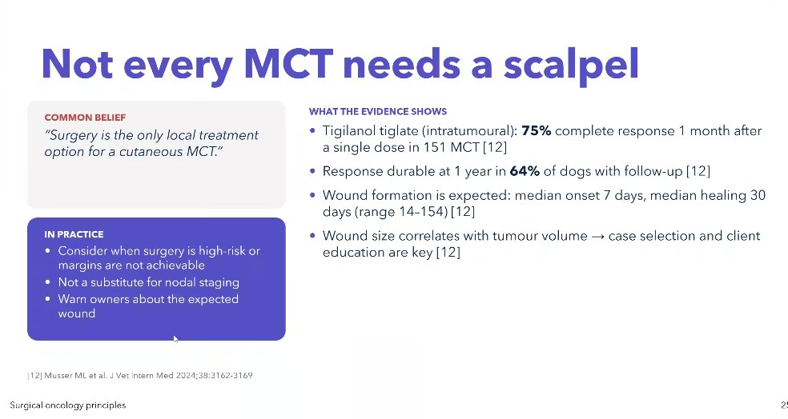
常見迷思
「手術是皮膚 MCT 唯一的局部治療。」
實務上怎麼做
- 手術風險高、或切緣做不到時考慮
- 不能取代淋巴結分期
- 事先告知飼主一定會出現傷口
📷 證據（Musser 2024, JVIM 38:3162–3169）：
- Tigilanol tiglate（瘤內注射）：151 個 MCT 單次注射後 1 個月完全緩解 75%。
- 有追蹤的狗中 64% 在 1 年時仍維持緩解。
- 傷口是預期中的：中位 7 天出現、中位 30 天癒合（14–154 天）。
- 傷口大小和腫瘤體積相關 → 挑選病例與飼主衛教是關鍵。
🎤 講者口述
- 🎤 切開／囊內切除：只切開皮膚，沿包膜把腫瘤剝出來，完全沒有切緣。台灣常見，因為飼主只想「看不到就好」，但這是最緩和的做法；適合只是要切片送檢，或脂肪瘤。
- 🎤 大型脂肪瘤不能靠 FNA 確認；最簡單的確認方式是 CT，影像上全部都是脂肪密度，基本上 99% 確定是脂肪瘤。
- 🎤 廣泛切除看腫瘤種類，常用 2–3 公分，甚至 5 公分；深部不可能拿 3 公分，所以改拿筋膜層（緻密結締組織，腫瘤不易穿過）；侵襲性強的腫瘤拿兩層筋膜。
- 🎤 根治：整個器官或整個區塊拿掉，例如截肢、截尾、脾臟摘除；要和飼主討論之後的影響。
- 🎤 切緣「內縮成漏斗」：切開皮膚後兩側皮膚會回縮，如果沒注意、斜著往下切，深部切緣會越來越靠近腫瘤（cone in），表面 2 公分、深部可能只剩 1 公分。要記住位置、垂直往下切；找到筋膜後用線把筋膜和皮膚綁在一起維持方向（做法見 Q&A）。
- 🎤 分期：已經轉移的話，目標只是緩和（例如腫瘤造成傷口、一直舔、痛），做廣泛切除沒有意義。
- 🎤 位置：例如肢端 2 公分的軟組織肉瘤，周邊 2 公分切得到，但那裡沒有筋膜可當深部切緣；沒有深部切緣就等於沒有切緣，那周邊切大也沒意義 → 改以切除肉眼可見的腫瘤為主、盡量能直接縫合，太大時可能要開放傷口處理一段時間。不是每個腫瘤都要 2、3、4、5 公分。
- 🎤 目標是根治時，就走廣泛切除，並視組織病理結果合併其他治療。
- 🎤 筋膜平面那三篇論文可以當工具書：例如腋下區域可能遇到胸肌、大圓肌等好幾層筋膜重疊，切到一半發現平面看起來不一樣時，查這篇就知道自己在哪一層。
- 🎤 組織病理不是選項：只要切腫瘤，送病理就包含在計畫裡、不讓飼主選要不要送。乍看是脂肪，裡面可能藏著東西，之後轉移就會後悔沒送。真的要幫飼主省錢，就把討論記錄好。
- 🎤 報告寫 margin clean 要很小心解讀，尤其某些腫瘤；細節請看 PDF。
- 🎤 MCT 不是都要切 2–3 公分：比例切緣，腫瘤 0.5 公分就往外量 0.5 公分；但講者不論如何一定拿一層筋膜。大多數結果都切乾淨；很大的 MCT 比較 tricky。
- 🎤 切不乾淨怎麼辦：很常見，不代表都要重切；看組織病理分級，建議和腫瘤內科合作。講者會給飼主選項（以軟組織肉瘤為例）：
・Grade 1：即使不完整，很多不會復發 → 可以局部監測（不是忽略）：每 6 個月回診摸疤痕周邊，並照胸腔 X 光。
・Grade 2：介於中間，可監測、建議放療（台灣現在較有放療選項），或重切。
・Grade 3：復發率太高 → 重切或放療。 - 🎤 重切（revision）：位置合理時，把整條疤痕當成腫瘤，從疤痕再往外量 2–3 公分、往下拿一層筋膜；只切疤痕上的小結節很容易復發，因為軟組織肉瘤有觸手狀（tendril）延伸。MCT、皮膚血管肉瘤講者也這樣做。重切後傷口關不起來要用皮瓣、植皮重建，是另一個主題。
- 🎤 Tigilanol tiglate：腫瘤太大、位置切不了、邊界不清，或在很遠端時可以考慮（講者：台灣應該有吧❔）。要告知飼主：反應率不錯但不是每個都會消失、可能復發，而且一定會有傷口（腫瘤會慢慢爛掉），要先衛教。
8. 局部淋巴結處理：淋巴結分期
▾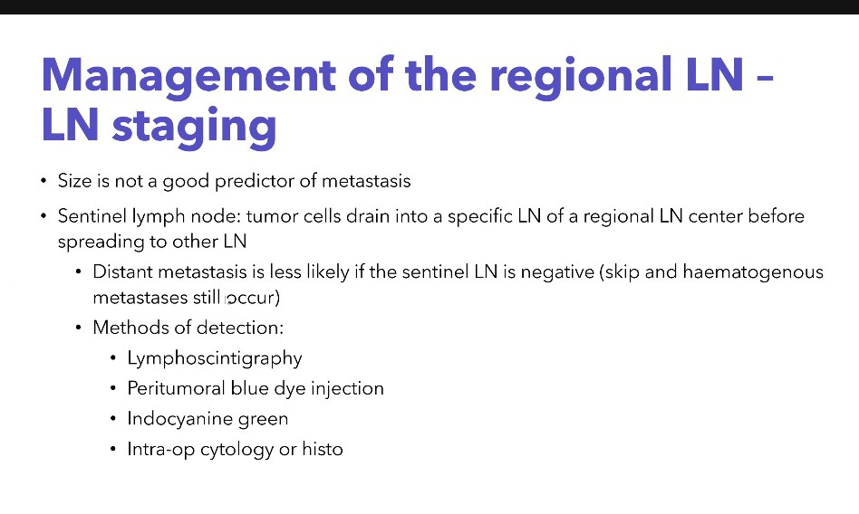
- 📷 淋巴結大小不是轉移的好指標。
- 📷 哨兵淋巴結（sentinel LN, SLN）：腫瘤細胞會先引流到局部淋巴中心裡特定的一顆淋巴結，再擴散到其他淋巴結。
- SLN 陰性時遠端轉移的機會較低（但仍可能有跳躍式轉移與血行轉移）。
- 📷 偵測方法：淋巴閃爍攝影（lymphoscintigraphy）、腫瘤周圍注射藍色染劑、吲哚菁綠（ICG）、術中細胞學或組織學。
- ✍️ FNA 可以是一個好的方式。
- ✍️ ICG：在腫瘤旁邊注射後，可以看哪一顆淋巴結被染上。
- ✍️ 人醫會做術中冷凍切片（frozen section）（錄音確認）。
- ✍️ 院內有 CT 可以做 CT 淋巴攝影（lymphangiogram）規劃。
冷凍切片：人醫在乳癌、黑色素瘤手術中把取下的哨兵淋巴結立刻冷凍切片判讀，陽性就在同一次手術做淋巴結廓清，不用二次手術；獸醫較少做，多以術後一般病理為主。
淋巴結：大小正常 ≠ 陰性，局部 ≠ 哨兵
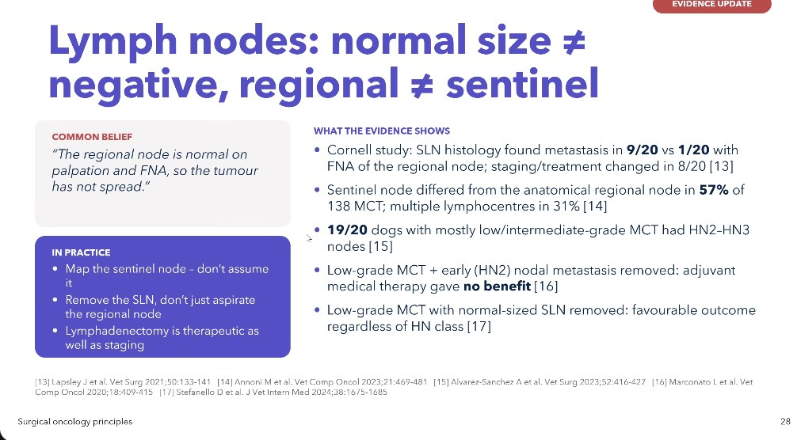
常見迷思
「局部淋巴結觸診正常、FNA 也正常，所以腫瘤沒有擴散。」
實務上怎麼做
- 要實際找出哨兵淋巴結，不要假設是哪一顆
- 摘除 SLN，不要只抽局部淋巴結
- 淋巴結摘除既是分期也是治療
📷 證據：
- Cornell 研究：SLN 組織學在 9/20 找到轉移，局部淋巴結 FNA 只有 1/20；8/20 因此改變分期或治療（Lapsley 2021, Vet Surg 50:133–141）。
- 138 個 MCT 中，哨兵淋巴結與解剖上的局部淋巴結不同的占 57%；31% 引流到多個淋巴中心（Annoni 2023, Vet Comp Oncol 21:469–481）。
- 20 隻大多為低／中分級 MCT 的狗，19/20 淋巴結為 HN2–HN3（Alvarez-Sanchez 2023, Vet Surg 52:416–427）。
- 低分級 MCT＋早期（HN2）淋巴結轉移且已摘除：輔助內科治療沒有額外好處（Marconato 2020, Vet Comp Oncol 18:409–415）。
- 低分級 MCT、摘除大小正常的 SLN：不論 HN 分級，預後都良好（Stefanello 2024, JVIM 38:1675–1685）。
哨兵淋巴結定位：選一個你用得到的工具
📷 投影片 29｜Sentinel lymph node mapping: choose a tool you can use（Evidence update；截圖未存檔，僅文字）
| 技術 | SLN 偵測率 | 實務重點 | 文獻 |
|---|---|---|---|
| 淋巴閃爍攝影（99mTc） | 91–100% | 黃金標準；需要核醫設備 | Romańska 2024, Animals 14:1089 |
| 間接 CT 淋巴攝影 | 90–100% | Iopamidol；最佳掃描時間約注射後 10 分鐘 | Lapsley 2021；Romańska 2024 |
| X 光間接淋巴攝影 | 1 分鐘時 90%；78% 可診斷或部分可診斷 | Iomeprol／iohexol／Lipiodol，大部分醫院都做得到 | Annoni 2023；Haas 2023, Can Vet J 64:142–148；De Bonis 2022, Vet Sci 9:484 |
| 近紅外光螢光（ICG） | 100%；敏感度 93.7% | 術中導引：手術時間與切口較短 | Chiti 2025, Vet Comp Oncol 23:320–329；Beer 2022, JSAP 63:670–678 |
| Methylene blue | 術中輔助 | 要搭配術前影像技術 | Annoni 2023 |
🎤 講者口述
- 🎤 尤其 MCT：一定要摸局部淋巴結；有證據顯示摘除淋巴結可能改善存活時間或延後復發，所以明顯腫大時講者傾向拿掉。
- 🎤 怎麼知道有沒有轉移？FNA 是一個好方式，看醫院設備。
- 🎤 哨兵淋巴結：腫瘤第一個引流到的淋巴結，不一定是解剖上的那顆，例如脖子的腫瘤不一定去下顎淋巴結，可能去肩前或咽後淋巴結❔。所以要用顯影檢查找。
- 🎤 ICG 是現在人醫和小動物都很夯的方法，快速、相對簡單：在腫瘤旁注射，等 5–10 分鐘，看哪一顆淋巴結亮起來就拿哪一顆；但需要專用裝置才看得到。被染到的不一定就是有轉移的那顆，只是提高拿到轉移淋巴結的機會。
- 🎤 也可以做術中細胞學或組織學：院內有人擅長細胞學的話，當場戳淋巴結，看到轉移就直接拿。人醫會做冷凍切片（frozen section），大約 30–40 分鐘就知道結果，也用來評估術中切緣；小動物因為需要設備，通常沒有。
- 🎤 常見誤解：淋巴結小就沒有轉移——這是錯的。MCT 在允許、飼主沒有財務考量時，講者盡量拿周邊淋巴結；已經變大就毫無疑問要拿。
- 🎤 投影片 29 給大家參考：講者覺得最簡單的是 ICG，或院內有 CT 的可以做 CT 淋巴攝影（lymphangiogram）；protocol 在這幾篇論文裡都找得到。
9. 術中考量
▾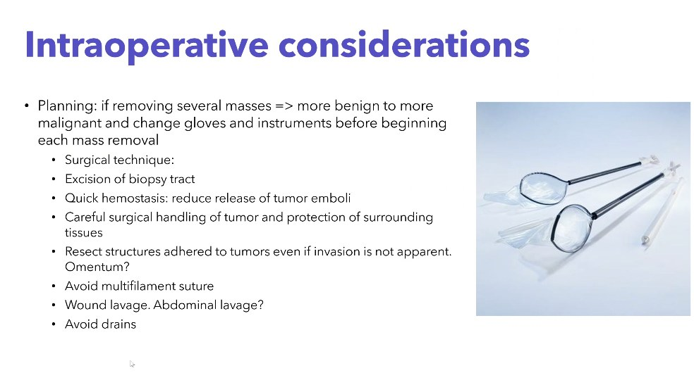
- 📷 規劃：要切好幾個腫塊時，從較良性切到較惡性，每切一個腫塊前換手套與器械。
- 📷 手術技巧：
- 切除切片路徑
- 快速止血：減少腫瘤栓子釋出
- 小心處理腫瘤、保護周圍組織
- 和腫瘤沾黏的構造即使看不出侵犯也要一起切除；網膜？
- 避免多股縫線
- 傷口灌洗；腹腔灌洗？
- 避免放引流管
- ✍️ 腫瘤大多不會放引流管（drain），因為可能造成腫瘤轉移。
🎤 講者口述
- 🎤 術中很多考量在於「意外」，希望靠術前規劃降到最低；把可能發生的事先和飼主模擬一遍。腹腔腫瘤 surprise 較多，事先講好術中可能打電話討論選項與風險。
- 🎤 飼主帶五顆腫瘤來切：依經驗排順序；每顆腫瘤用獨立器械，避免交叉污染——人醫有報告把腫瘤從一處帶到另一處。
- 🎤 講者常規：腫瘤切下後換器械再關閉傷口。偏良性的不換應該還好；但明顯是 MCT、或腹腔切了很大的腫瘤，就器械和手套全部換一套再關。
- 🎤 圖片是內視鏡手術的取物袋：微創手術切下腫瘤後先放進袋子再取出，人醫有報告直接拉出來會在腹壁或胸壁造成腫瘤播種。
- 🎤 盡量用單股縫線。
- 🎤 大部分腫瘤不放引流管，因為會形成引流路徑、可能造成腫瘤播種；例外：做皮瓣等要讓結果最好時有時還是要放，或合併嚴重感染。投影片上的論文支持這些做法。
術中切緣評估技術比較
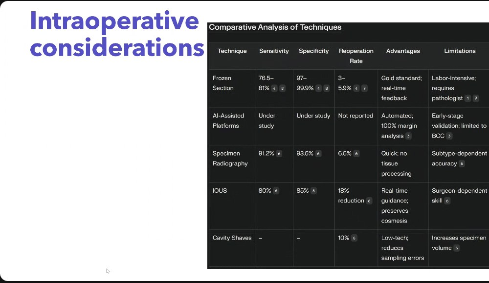
| 技術 | 敏感度 | 特異度 | 再手術率 | 優點 | 限制 |
|---|---|---|---|---|---|
| 冷凍切片 | 76.5–81% | 97–99.9% | 3–5.9% | 黃金標準；即時回饋 | 費工；需要病理師 |
| AI 輔助平台 | 研究中 | 研究中 | 未報告 | 自動化；100% 切緣分析 | 早期驗證；限於基底細胞癌（BCC） |
| 檢體 X 光攝影 | 91.2% | 93.5% | 6.5% | 快；不需處理組織 | 準確度依亞型而異 |
| 術中超音波（IOUS） | 80% | 85% | 減少 18% | 即時導引；保留外觀 | 依賴術者技術 |
| 腔壁削切（cavity shaves） | – | – | 10% | 低技術門檻；減少取樣誤差 | 增加檢體體積 |
- 🎤 這張是給大家參考，時間有限沒有細講：人醫在評估切緣時考慮什麼、用什麼方式確認拿到的是要拿的。
10. Q&A
▾🎤 用途：確認淋巴結有沒有轉移，或評估切緣——切完後從剩下的組織再切一塊做冷凍切片，有殘留就再切。不是每個腫瘤都需要，主要用在較可疑、較可能惡性、或局部復發率高的腫瘤。
🎤 侵襲性分兩種：局部侵襲與傾向轉移，有些兩者都有。HCC 有三型：巨塊型（massive）、結節型（nodular）、瀰漫型（diffuse），結節型與瀰漫型較 aggressive、較會轉移；巨塊型較少轉移。
🎤 能拿到切緣最好，但如果切緣不會改變長期預後，不要為了多一點切緣冒險切破後腔靜脈，狗會直接死在台上。要權衡效益與風險，所以要了解每種腫瘤的特性。
🎤 維持在正中間往下切，切到深處找到第一層筋膜，把筋膜掀起來，用縫線把筋膜和皮膚綁在一起（講者叫「漢堡」burger）。每切到一個點（例如 9 點、10 點鐘方向）就再綁一針，這樣從表皮、中層到深部筋膜整圈都是 3 公分，不會一直往內切。
🎤 綁線的另一個好處：腫瘤中間夾很多脂肪時，分離過程會扭轉，綁住就不會搞不清哪邊是哪邊。送病理時標註 cranial／caudal／lateral margin，並用墨水上色提醒病理師看哪裡；深部切緣講者會用另一個顏色（橘紅色）❔。不這樣做的話，檢體放進福馬林或放久會變形，就分不清方向。
主持人：請大家填問卷；對病例有興趣的話，明年再看有沒有機會邀請講者來講病例討論。